A city of lights and flowerbeds
One I expected, the other … not so much
I’d like to start by explaining a couple of things I glossed over in my previous post. Firstly, when I said Aiko ended up showing me around Tokyo, I actually meant Akihabara, the district I’ve wanted to go ever since hearing about it in Year 9 Japanese. It’s a place geared specifically towards anime and manga (comic and animation) nerds so it contains some of the coolest and strangest places in Japan.
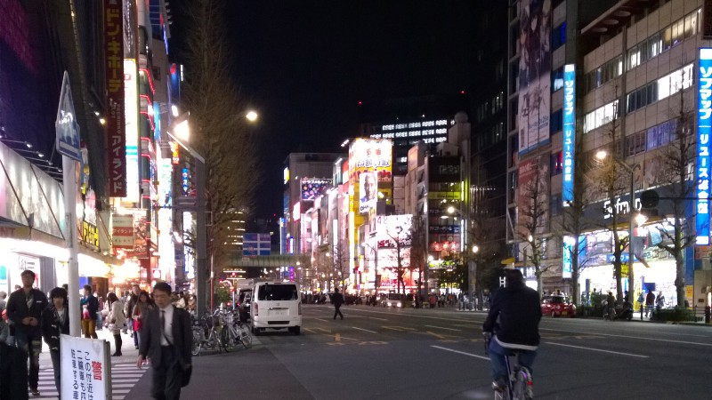
Akihabara is a place of towering skyscrapers, massive billboards and screens, seething crowds of people and all the other clichés that I would expect from Tokyo. I was therefore surprised how within five minutes of arriving, Aiko pulled me into a small, neat, traditional-looking sushi bar.
In case you hadn’t realised, I’m not talking about the sushi you find in New Zealand, where everything is either salmon or chicken and the rice tastes like it’s been sitting in that box for the past week. I’m talking about real sushi, countless varieties made to order by a knife-wielding chef. It’s annoying when you spend ten minutes trying to puzzle out a few of the items on a vast menu while listening to everyone else shouting out their orders without even glancing at it.
I’m exaggerating of course, but I’m glad Aiko was there to recommend things. I’m still not sure what I ate, but it was delicious!
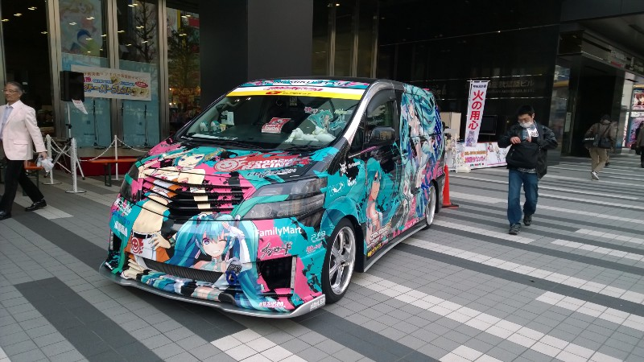Perhaps unsurprisingly, we passed an anime convention a few blocks after leaving the train station
After the meal, we wandered around for a while before I happened to mention that I’d heard about meido-cafe (maid cafés) in class last year. Aiko assumed from this that my greatest desire would be to go to one, so we went to one.
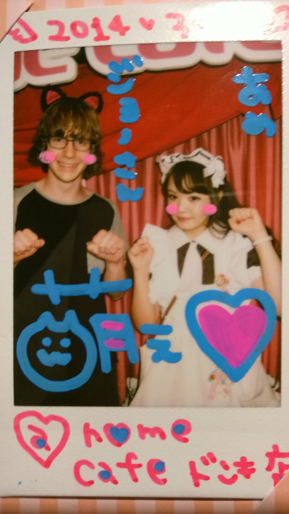Kawaii!
For those who haven’t heard of them, a meido-cafe is a café where all the waitresses are dressed up in cute and over-the-top maid outfits, mince around acting shy and cute and play games when giving you your food and drink which are amusing, embarrassing and, well, cute. The food and drink is usually vastly overpriced (and there’s an entry fee on top of that) but it was still a cool experience. Sad to think how many people go there just because there are cute girls who have to act as if they like you, but fun if you don’t take it too seriously.
That was pretty much all we had time for in Akiba. We grabbed a quick bowl of udon before leaving (traditional food here is incredibly cheap — $5 will get you a filling and tasty meal in most noodle/curry shops) and then went our separate ways.
The trains here are very easy and fast, although that’s something I expected from Japan. However, I did have a rather disturbing reminder of that efficiency while returning from Akihabara when someone apparently attempted suicide by throwing themselves under a train on that line (I didn’t gather whether it was the one I was on or not). There was a brief announcement and a sign saying “Delayed — passenger injury”, but soon afterwards the train started moving again as if nothing had happened. It was delayed for under a minute.
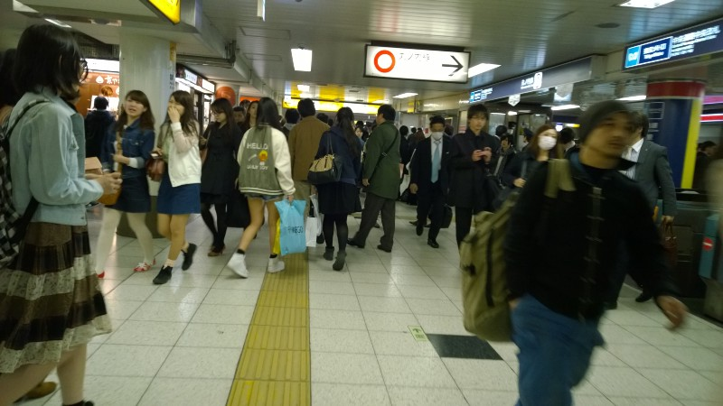A rare clear patch among the crowds
I spent the next day exploring Ikebukuro. There isn’t much to say that can’t be explained better in pictures, so here goes.
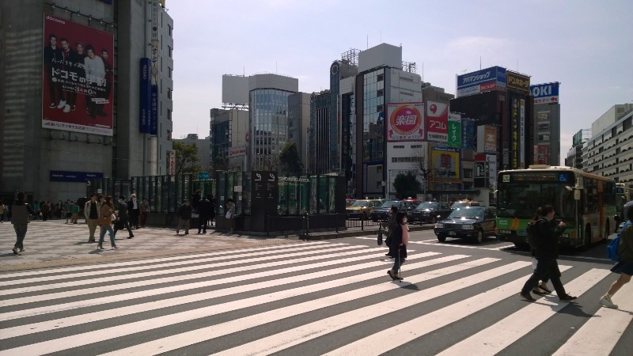It’s not quite so pretty in daylight …
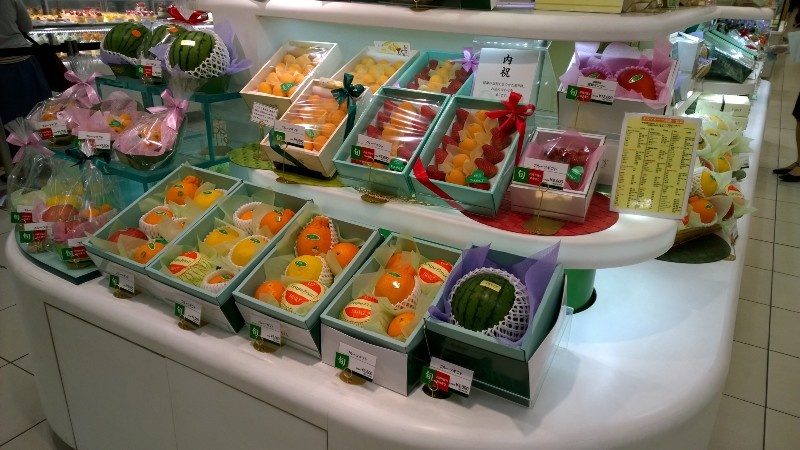$40 for a melon?
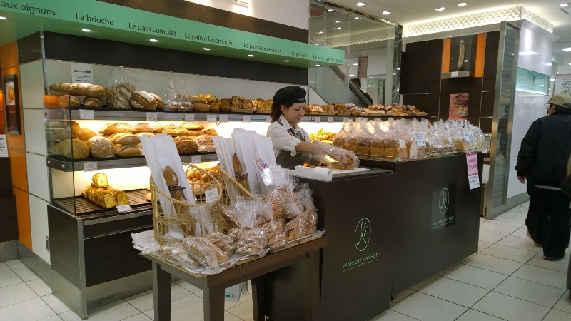Hmm, this doesn’t look Japanese …
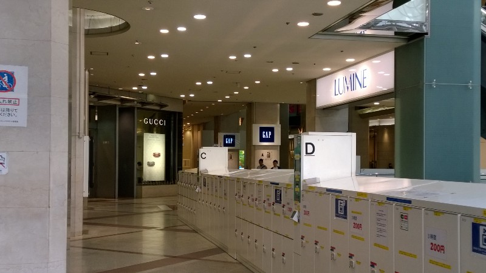Wait, Lumine, Gucci and Gap? Am I really in Japan?
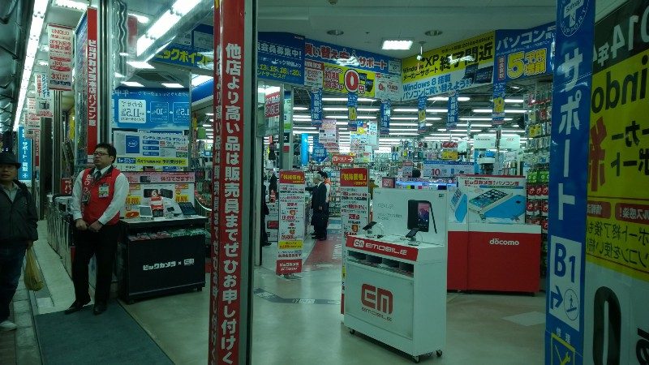The first floor of an 8-floor electronics store. Which has a supplementary 6-floor branch across the road. And a 5-floor outlet store two blocks down the road. Heaven!
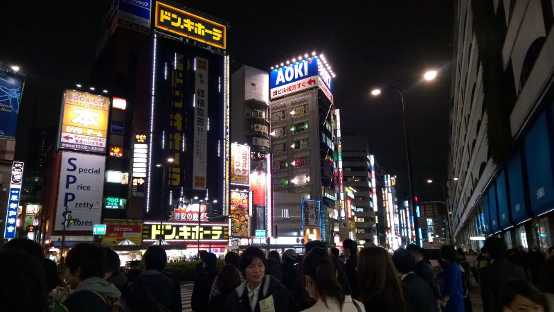Yep, night is when Ikebukuro is truly amazing
Yesterday I also moved into my permanent accommodation. It’s 10 minutes (by train) from Ikebukuro. It’s basically in the geographical centre of the Tokyo urban area. And it feels more like a village than a city.
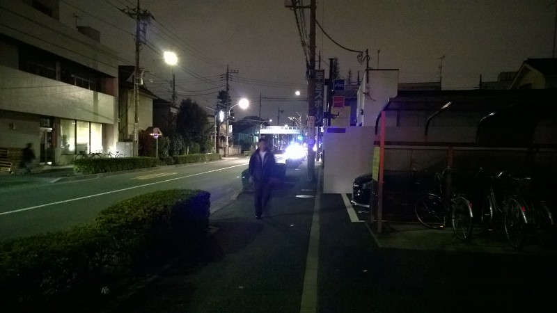Okay, Heiwadai by night isn’t quite so impressive
It’s really weird to think that I’m still in Tokyo — a feeling I’m sure I’ll expand on in subsequent posts — but I’m quite glad to be in a quieter place. Ikebukuro is awesome to visit, but I wouldn’t want to live there.
Weird things
- You know that stuff I was saying about convenience stores? Well, every convenience store proudly advertises the fact that it sells alcohol and cigarettes. Apparently the anti-smoking and anti-drinking campaigns aren’t as widespread here …
- Fruit is expensive here — even in supermarkets (where the melons are less than $40, you’ll be pleased to know) you still pay $1 per kiwifruit and $1.50 per apple.
- I haven’t yet gathered whether it’s a law or not, but everyone sticks to the left-hand side of escalators. It’s spooky, especially considering how pushy the Japanese are in crowds.